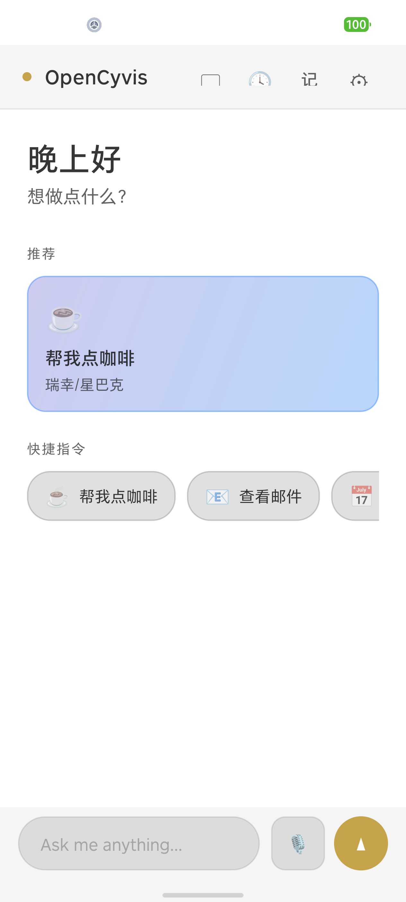
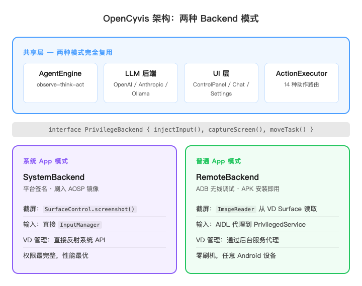

Commercial AI phones are black boxes. This one isn't. See every line of code, pick your model, control your data.
Open Cyber Jarvis

No custom ROM required for standard mode. Install the app, follow the setup wizard for ADB wireless pairing, choose your LLM backend, and start using. You can send tasks from messaging apps, receive results and screenshots in chat, and use a redesigned interface built for daily use.
When a company ships an "AI phone," they get full access to your screen, apps, messages — and you can't see what model is running, can't verify what data leaves your device, can't choose an alternative.
Locked to ByteDance's model.
Locked to Samsung + Google.
Gemini only. You get what they give you.
You see the code. You pick the model. You decide where data goes.
| Commercial AI Phones | Cloud Phones | Phone-control Scripts | OpenCyvis | |
|---|---|---|---|---|
| Open source | ✕ | ✕ | ⚠️ | ✓ |
| Choose your AI model | ✕ | ✕ | ⚠️ | ✓ |
| Data stays on device | ✕ | ✕ | ⚠️ | ✓ |
| Phone usable while AI works | ⚠️ | ✓ | ✕ | ✓ |
| Works with any app | ⚠️ | ⚠️ | ⚠️ | ✓ |
| No computer setup | ⚠️ | ⚠️ | ✕ | ✓ |
| Works on everyday phones | ✓ | ⚠️ | ✕ | ✓ |
Give it a task in natural language — it sees your screen, understands the UI, and operates apps just like you would.
AI works on a virtual display — your phone stays free. Book flights while you scroll Twitter.
No custom ROM, no computer needed. Install the app and follow the setup guide.
Send tasks from Feishu or Telegram. Get results and screenshots right in chat.
Save frequent operations and run them on a schedule or with one tap. Supports geofencing too.
Save multiple AI configs and switch with one tap. No re-entering URLs and keys.
Full day/night theme. Follows system settings or set manually.
Standard mode supports MIUI, ColorOS, OriginOS, and other vendor ROMs.
Cloud, private, or local — use the model or service you prefer.
Observe in real-time. Take control anytime. Hand back seamlessly.
Pauses on ambiguity instead of guessing. "Which Zhang Wei? I see three."
On-device speech recognition via Sherpa-ONNX. No internet needed.
OpenCyvis is designed around choice: your phone, your preferred model, your data rules, and a clear path to audit what the agent is doing.
OpenCyvis keeps the agent visible when you want supervision. You can see progress, step in at any time, and hand control back when the task is ready to continue.
Follow what is happening without losing your place.
Jump in when a task needs your judgment.
Connect a cloud model, a private service, or a local model via Ollama. OpenCyvis is not tied to one AI vendor.
Save preferences and reusable routines so repeated work gets faster, while keeping you in charge of what is stored.
Send a request from chat and get status, screenshots, and final results back in the same conversation.
All code is public under Apache 2.0. Users, builders, and researchers can inspect how the app behaves.
Design principle: An AI phone agent should be inspectable, replaceable, and controlled by the person who owns the phone.
Both install modes share all upper-layer code. The difference is only in the privilege layer, isolated behind a PrivilegeBackend interface.
| SystemBackend | RemoteBackend | |
|---|---|---|
| Privilege source | Platform signing (uid system) | ADB shell (uid 2000) |
| Input injection | InputManager reflection | AIDL proxy to PrivilegedService |
| Screenshot | SurfaceControl.screenshot() | ImageReader from VD Surface |
| VD task management | ActivityTaskManager reflection | PrivilegedService proxy |

Bring your own AI account, connect a private server, or run locally when privacy matters most.
| Cloud Models | |||
|---|---|---|---|
| Model | Latency per step | Pass Rate | Notes |
| Qwen 3.5 Plus | 4-6s | 4/4 | Stable, recommended |
| Claude Opus 4 | 4-8s | 4/4 | Highest reasoning quality |
| MiMo v2.5 | 2.3-4.5s | 4/4 | Fastest |
| GPT-4o | 3-6s | 3/4 | Occasionally ignores tool_choice |
| Local Models (via Ollama) | |||
|---|---|---|---|
| Model | Size | Speed | Pass Rate |
| Gemma 4 26B-A4B Q4 | 17 GB | 63 tok/s | 4/4 |
| Gemma 4 E2B Q4 | 1.8 GB | 41 tok/s | 4/4 |
| Qwen 3.5 35B-A3B Q4 | 22 GB | 47 tok/s | 3/4 |
| Gemma 4 E4B Q4 | 3 GB | 61 tok/s | 3/4 |
Recommended: Gemma 4 26B-A4B — best balance of speed, quality, and memory.
Minimal: Gemma 4 E2B — just 1.8 GB, still passes all 4 tests.
An AI agent with full phone access is one of the most privileged pieces of software you can run.
Choose Standard Mode for everyday use, or System App Mode for maximum performance with AOSP.
No root, no computer, no custom ROM. Android 11+.
For developers building custom AOSP images.
# System App Mode build git clone https://github.com/opencyvis/opencyvis-phone.git cd opencyvis-phone/android ./gradlew assembleSystemRelease
# Configure LLM via deeplink # Local Ollama (fully private) adb shell am start -a android.intent.action.VIEW \ -d "opencyvis://config?provider=ollama&base_url=http://localhost:11434&model=gemma4:26b" # Cloud API adb shell am start -a android.intent.action.VIEW \ -d "opencyvis://config?provider=openai&base_url=https://api.example.com/v1&api_key=YOUR_KEY&model=qwen-vl-max"
Download APKs from the Releases page.
On-device speech recognition (Apache 2.0)
ADB privilege access for standard mode (Apache 2.0)